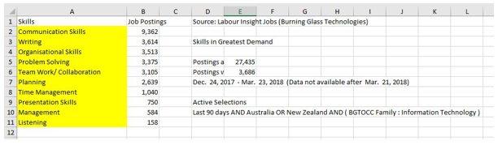

The 3 highest in demand IT skills not required directly for any of our jobs are JavaScript with 2946 jobs posted, Java with 2860 jobs posted and SAP with 2189 jobs posted in the most recent data collection from Burning Glass
The general skills can be ranked in terms of demand by the below data set
